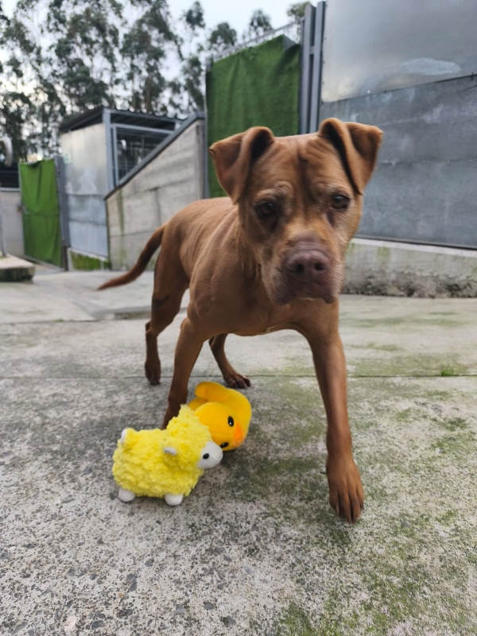
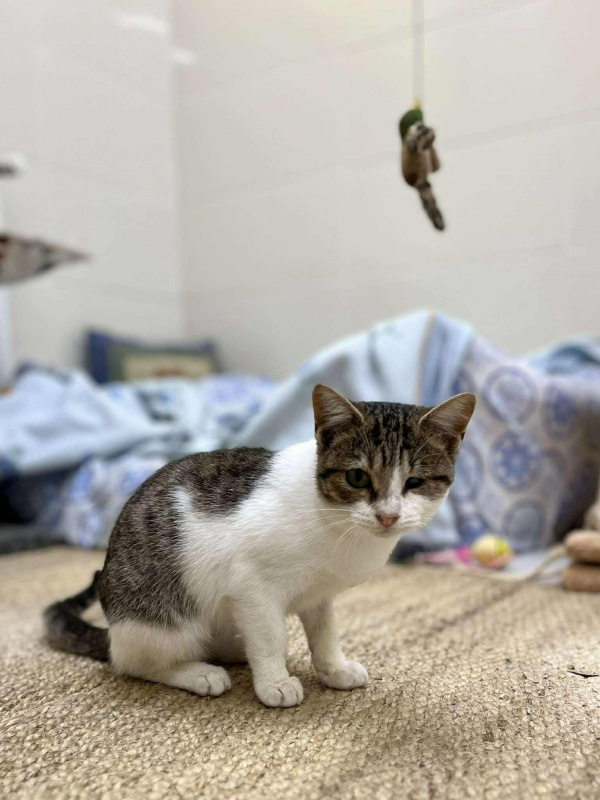

Apadrina a un animal
Estos animales no pueden ser adoptados en este momento, pero necesitan apoyo. Tu aportación mensual cubre sus cuidados y les da una vida digna.
¿Qué significa apadrinar?
Animales disponibles para apadrinar

Leia
MayorCentro de Protección Animal de Gijón
Pit bull, 14 años. Una abuela con artrosis pero con mucho amor que dar. Muy sociable con personas y perros. Necesita licencia PPP.

Dexter
MayorNortemascotas · Asturias
10 años, cruce de Pastor Alemán. Lleva 9 años en adopción. Fue maltratado y abandonado. Es un amor de perro que busca quien le dé el cariño que merece.

Bosque
EnfermedadFundación Protectora de Asturias
Gatita de 8 meses positiva a leucemia felina. Necesita cuidados especiales y medicación continua. Alegre y cariñosa a pesar de todo.